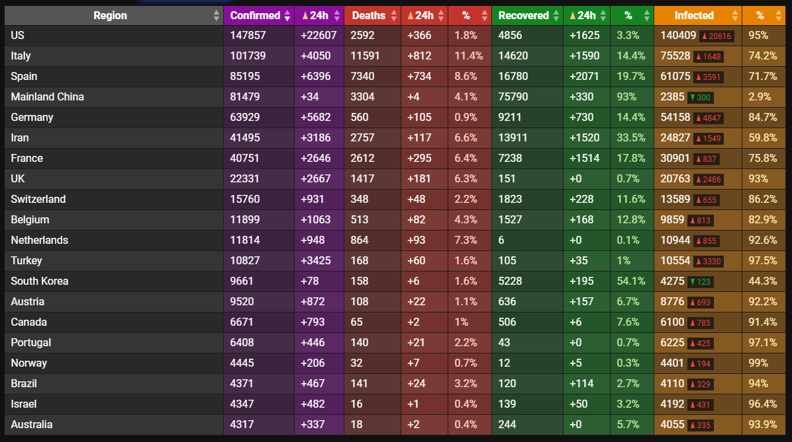

A small business owner’s thoughts in the Corona crisis
A little kid has a puppy which is his best friend. The kid loves his puppy more than life itself. One day, the kid gets scared of an unknown, outside threat. The kid immediately thinks of its pet and wants to protect it. The kid clings on to the pet and holds it forcefully. In the kid’s desperate attempt to help and cover the pet, and unaware of his physical superiority and capabilities, he hugs the pet so hard and so tight that the puppy eventually dies in the kid’s arms. He literally hugs it to death.

The threat passes and the kid realizes he overreacted, but there was nothing that could make the puppy come back. Even if the fear for his life had been motivated and the threat had been potentially deadly, the kid would certainly have wanted to face the danger side-by-side with his best friend, rather than alone.
We should protect our basic rights, economy and market conditions
I am not an expert in neither epidemiology nor politics. I am a small business owner, an engineer and a freelancer, but I believe that I have some interesting input from my perspective. One of those is that if we give up our rights and our freedom in times of crisis, it is possible that we will never get them back again and if we do get them back the consequences of losing them for a while may be horrendous. The story about the kid hugging his puppy to death is a metaphor for our rights and our freedom in these critical times. There are tendencies in governments all over the world hugging their citizens to their death. Smothering them slowly, but decisively, which may very well lead to more grievous consequences than the devastating effects of the spread of the virus in the first place.
We should not forget about and we should be extremely cautious with our basic rights, our economy and manipulating the market conditions. The third, and usually forgotten dimension of this debate, besides the health-related suffering and the economic suffering, is the violation of our rights and our freedom. Our fundamental, constitutional rights, which are never(?) supposed to be compromised with. For instance, Sweden has stated that we have no legal support for banning people gathering in smaller groups than 50 people. No legal support! This is an important point. However, the politicians have no bad intentions - certainly the kid did not want to choke his puppy to death. His intentions were pure and his heart was in the right place. Like some governments, in my opinion, have too much power and seem quite unaware and abusive of these powers, much like the kid, and in their desperate attempts of trying to show resoluteness, a strong leadership and the power to act quickly and decisively, I believe one can question whether or not the end really justifies the means. In the end, will their measures do more harm than good?

Sweden´s approach
There is a competition and comparison going on between countries - sometimes the competition might actually be good, for example when motivating each other and sharing knowledge in the chase of finding a vaccine. Sometimes the competition might be bad, such as when countries are competing in “who inflicts the toughest preventative measures first”. No one knows what the end result will be and who will be named the “winner” and the “loser” in handling this crisis, which governments seem to be focusing more on than actually caring for the well-being of their citizens. Surely, if the power is within your reach, it must be tempting to use it. In my opinion, just because you can, does not always mean that you should.
There are certain things that are of utmost importance in these critical times of Corona. For me, as a layman, they seem to be: building hospitals, producing respirators and increasing the number of working staff in the hospitals. Slowing the spread of this virus will also be of help since that could help us in being able to treat all patients who simultaneously are going to need intensive care. Everyone seems to be agreeing with these statements, from what I can gather. However, the debate is completely focused around as to HOW to slow the spread of the virus. No one knows for sure. The uncertainty is too high and there are a number of extremely important factors such as the timing of the different measures, and the reach of them. It is also important to acknowledge that the effects of the measures will decrease over time. Sooner or later, people will start to compromise with or even break the quarantine rules.
From what I can gather, these are the four most important questions to answer regarding the measures which hypothetically could slow the spread of the virus:
The New York Times recently wrote about Sweden’s approach and they declared the fact that many countries question Sweden’s handling of this crisis and state that their opinion of Sweden’s approach is “too little, too late”.
What I have been trying to say throughout this article thus far is that I am agreeing with our approach here in Sweden. I do this for a number of reasons - the most important one is to always put our basic rights first. Otherwise you might just end up killing what you wanted to protect from the start. For example, the consequences of the complete market recession we are headed towards at an alarmingly escalating pace. It just might be so that more people will be depressed and commit suicide, turn to crime or drugs, or even forever miss the oppportunity to say goodbye to their loved ones due to a nation-wide ban of funerals. Who can say that it is worth it? Who decides that for everybody else? Where do we draw the line? We had agreed earlier that the basic line was drawn at our fundamental, constitutional rights, but some countries are definitely violating those as well. The approach that Sweden has - that it is up to the individual to do what she can, is both a beautiful belief in humanity and an impressive protection of our rights in these challenging times.

Statistics from Covid19info.live at 2020-03-30.
The “end-date”-debate
Another interesting aspect about this situation is that many demand “an end-date”, much like Swedish economist and debater Kerstin Hessius. When will these complete violations of our rights stop? When can we go back to normal? It is a legitimate question with a difficult answer. If it gets even worse, what measures do we have left? When do the effects of shutting down our schools have worse consequences than the risk of the potential increased spread of the virus if we open them? It is a very difficult question to answer with the knowledge that we currently have. Just because we have a number and are able to count deaths of the virus, that number in itself might not motivate a whole generation of children being set-back several months in education. It is simply difficult to compare.
I work within IT and particularly within agile product development, and I must say that people who are demanding an end-date might see the Corona-crisis as a project - with a set scope, a deadline and a budget. However, and as Swedish physician Anders Tegnell seems to try to convey, it is not a project, but we rather need to have a trial-and-error-approach, work iteratively as well as hypothesis- and test-driven. Here is where the older generation and those not familiar with agile organizations or the scientific methodology are lost. They are not used to working in an agile fashion. They are more used to working in projects. This is not their fault and it is just a fact, but we probably need to approach this in a little different way than we are used to. Since with the new Coronavirus or Covid-19, the scope is not set, the deadline is not clear and the budget is certainly not limited.
I must also add that it also makes sense to have a more wait-and-see attitude as a country due to the trial-and-error-approach we must have in this situation. We, as a world, will find out what works and what does not in slowing the spread, and then we can all shamelessly copy that measure. We, as Sweden, might not even need to experiment with our own citizens, but letting the countries who are more keen on giving up their citizens’ rights and screwing up their economy beyond recovery, do the trials and errors. And if we are all going down anyways, or if Sweden will have a much worse situation because of it, we can at least conclude that we did not screw everything else up as well. The kid faced his fears together with his best friend.
What good can come out of recessions in general and the Corona crisis in particular?
Rounding off on a more positive note, what happens during an economic boom or upswing (which we have had since the last crisis, the financial crisis of 2008), is that money becomes cheap. In the market, we bet on new ideas and projects and we take more chances. What happens during a recession, on the other hand, is that it is survival of the fittest and a natural selection. What is not productive and not viable will evidently be stopped. Those are the basic market conditions and it is a good thing that we stop the companies, ideas and projects which actually are not productive! It is important that we remember this. Now, during the Corona crisis, the market conditions are tilted and we are definitely headed towards a recession of some kind. There will also definitely be long-term changes in the market conditions because of the crisis and companies will have to learn to adapt, and otherwise they will go.
In my own company, in order to survive, I have saved up a buffer. I hope to never have to use it, but such a buffer is supposed to be used exactly during these times! If I have not saved up enough of a buffer, I will liquidate my company or put it to rest and go and get a real job. I may also lower my expectations and my salary. That is how the market works and I will survive, one way or another. If my company fails the test, I can try again. It is not a tragedy, it is just the way it works. My point is that governments all over the world are putting in measures which are too broad and by doing so, they are tilting the market conditions. It makes sense to help some companies, for example restaurants who otherwise do well or have been around for a long time, but you cannot and should not try to save everybody! The risk is that everybody suffers from it instead. I also believe that there is no point in trying to push-up or even try to prevent a recession by trying to boost the whole economy in the short-term. If you do that, you might be out of stimuli packages when the real dip is here and the real dip might be deepened because of it. It is both common with recessions and for companies to go into bankruptcy during those times. We should not try to postpone recessions in their very beginning, for the simple fact that they are unavoidable, and for the same reason not try to save EVERY company going through a bit of a hard time right now.
Some of the absolute benefits, when we do get out of this, are surely the boost of the digitalization and the un-stigmatization of working-from-home. During a long time, we have slowly transcended into a more digital world. Now we see the benefits of that and those who have been slow at adapting, might be forced to pick up their pace. We have never been this digitized, but now, during a quarantine situation, the digitalization is really put to the test! There has also been some stigmatization around “working from home”. For a long time now, many of us working in normal office jobs have had all the prerequisites, but for some inscrutable reason, we have never really taken the leap. For reasons, which probably can be traced back in our culture as well as in our history, face-time has been the status quo. Up until now. I believe the industrial revolution enforced face-time, the boomer generation adapted it to the office space, but us millennials, with the help of Corona, will finally put an end to this menace.
Conclusion
It is an extremely interesting and horrific time we are experiencing right now. One that will definitely go down in the history books. What we are doing now will define us for a long time-period ahead and we need to be careful with the tools that we take out of our toolbox. Particularly since the end might not always justify the means, but also due to the fact that we might run out of tools at some point. If we do run out of tools, the situation will be completely out of our hands. We also need to approach this a little differently and everyone could benefit from reading up on the scientific methodology, which is practiced in agile product development, which includes a trial-and-error-approach, an iterative process as well as hypothesis and data-driven basis for decision making. This is an approach which we are forced to practice since we do not have a set scope, a deadline or a budget of this unknown threat. On the other side, over the horizon, we might come out of this with a more flexible, free and productive working environment as well as an even more digitalized society. If we handle this well, we might come out of it stronger than before and, referencing back to my metaphor in the beginning of this article, we might not have to kill what we hold dearest in the meantime.
Thanks for reading my article! My name is Anna Leijon and I am a freelancer, an engineer and a small business owner within the IT industry. I write blog articles continuously, mainly within the subjects of IT and being self-employed. Sign up for my newsletter in order to get notified when the next content is going to be published :) and please feel free to send feedback or questions to me: anna@annaleijon.com
/Anna Leijon